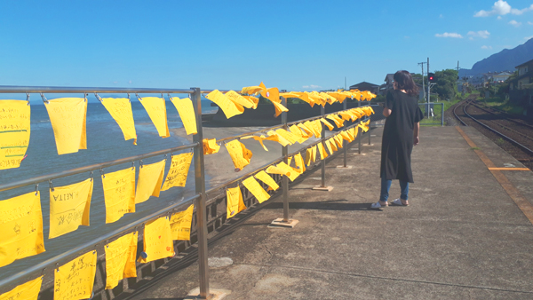
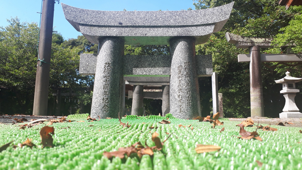
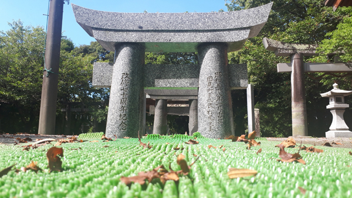
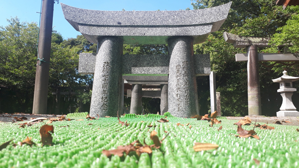

top
profile
blog
contact
長崎県紹介

最後に私が住む長崎県を画像とともに紹介します。
日本一海に近い駅として有名な大三東駅。

こちらは雲仙市にある岩戸神社、同じく雲仙市の淡島神社です
岩戸神社は縄文時代からの歴史ある場所 木々から射す日光もあいまって神聖な空気を感じました。
淡島神社は人一人がくぐれるかどうかという小さい鳥居が3つ並んだ神社。全部くぐり切れば安産のご利益があるとか。
この日は日差しも強く汗だくになりながら妻と何とかくぐり切りました。

 
こちらは雲仙市にある岩戸神社、同じく雲仙市の淡島神社です

こちらは雲仙市にある岩戸神社、同じく雲仙市の淡島神社です